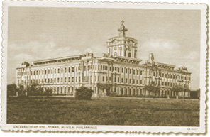

|
j
a v a s c r i p t |
January 7, 1942

Santo Tomas University campus becomes an internment camp for alien nationals.
Santo Tomas University with its 22 hectares of grounds has been turned into a concentration camp for allied families. Those interned — sometimes only part of a family — entered unprepared, and so a rush is on to send them basic necessities and food. We are feeding two families. Visiting time is a circus: Six Japanese-appointed internees receive parcels, laying them out on a central table for the guards to inspect. Everything is examined — from blankets and mattresses to milk bottles for the children. Some Americans and Brits are still scot-free but their movements are limited and they’re just waiting for the call. A Scot got away twice by insisting he was Scottish and not British. An American, anxious to get home to his family, got away by claiming in broken English that he was Spanish. For proof, showed the sentry a letter in English — upside-down! The papers of ex-prizefighter and Spaniard, Manuel La’O, were fine, but a sentry took his bike after a gust lifted his sleeve and exposed a tattoo of an American Eagle. |
|
|
|
|